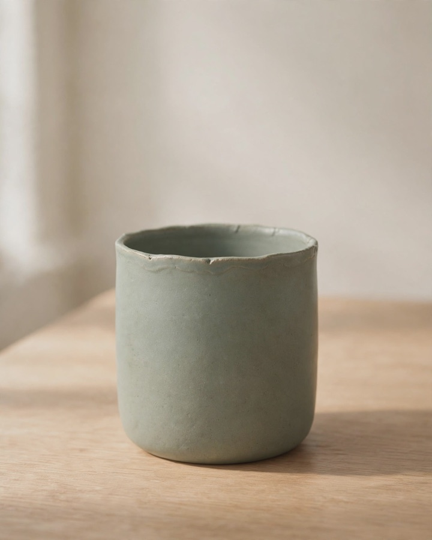
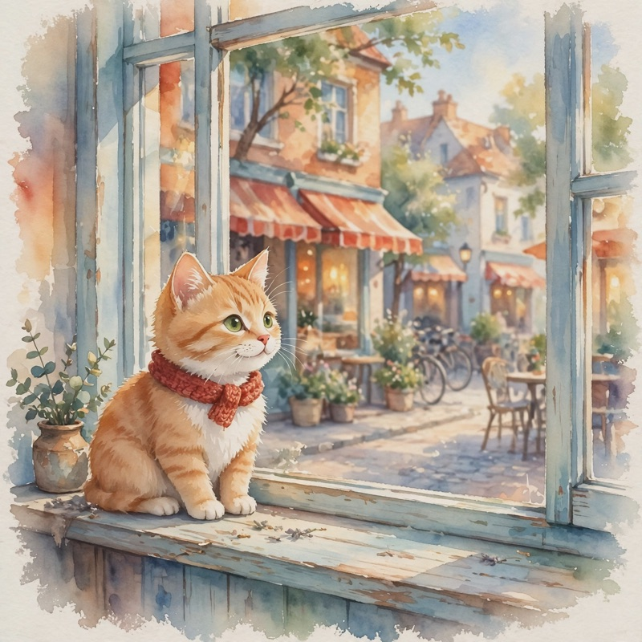

muse-mcp samples
Made with muse-mcp from the prompts in its README, unedited apart from resizing. All of it is AI-generated by muse.ai.
Speech
Voices from muse's built-in catalog, normal speed (--speed 100).
“Hi there! This clip was made with muse, straight from Claude Code. Claude picked my voice and wrote what I'm saying. Not bad, right?”
“Xin chào! Đây là giọng đọc mẫu, được tạo bằng muse ngay trong Claude Code. Bạn chỉ cần viết lời, chọn giọng, vậy là xong.”
“Hallo! Diese Sprachprobe kommt von muse, direkt aus Claude Code. Einfach Text schreiben, Stimme wählen, fertig.”
Images


--change (a snowy street) and --keep.